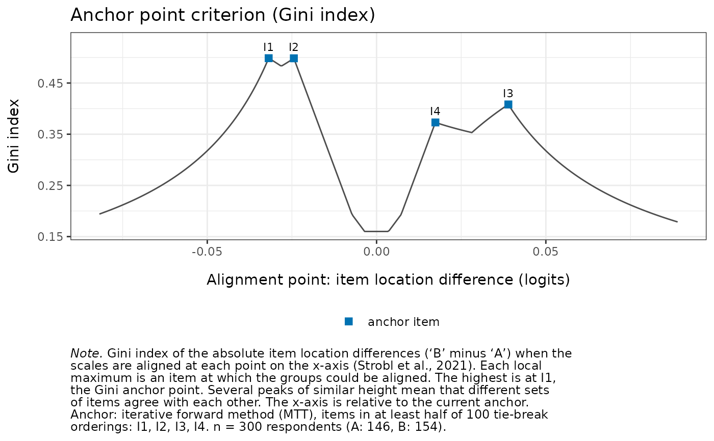

Compares two groups' item and threshold locations from conditional maximum likelihood (CML) partial credit fits. The two scales are linked through anchor items chosen from the data, each comparison gets a Wald test, and the p-values are corrected across items or thresholds. The spacing test of thresholds needs no anchor.
Usage
RMdifAnchor(
data,
dif_var,
anchor = c("forward", "gini"),
level = c("item", "spacing", "threshold"),
output = c("kable", "dataframe", "ggplot", "list"),
plot_type = c("differences", "criterion"),
correction = c("fwer", "holm", "fdr_bh", "none"),
alpha = 0.05,
conf = 0.95,
reference = NULL,
sort = FALSE,
n_seeds = 100,
seed = 20260113L
)Arguments
- data
A data.frame or matrix of item responses (non-negative integers, 0-based). One column per item, one row per person. Pass the grouping variable separately via
dif_var.- dif_var
Vector of length
nrow(data)(factor, character or numeric) with exactly two groups. Rows where it isNAare dropped with a message.- anchor
"forward"(default) or"gini". See Details.- level
What is tested:
"item"(default, item locations),"spacing"(the distances between an item's thresholds, no anchor needed) or"threshold"(each threshold). Each level is its own family for the multiplicity correction.- output
"kable"(default),"dataframe","ggplot"or"list"(the table together with the settings and sample sizes, see Value).- plot_type
With
output = "ggplot":"differences"(default) plots the differences at the chosenlevelwith confidence intervals."criterion"plots the Gini criterion of Strobl et al. (2021), which is available with either anchor.- correction
Multiplicity correction:
"fwer"(default, single-step, controls the family-wise error rate),"holm","fdr_bh"(Benjamini-Hochberg, controls the false discovery rate) or"none".- alpha
A unit is flagged when its corrected p-value is below
alpha. Default0.05.- conf
Confidence level of the intervals. Default
0.95. The intervals are not corrected for multiplicity.- reference
The group subtracted in the differences, one of the two levels of
dif_var. DefaultNULL, the first level.- sort
Logical. Sort the table rows by the size of the difference (spacing: by the test statistic). Default
FALSE.- n_seeds
Number of random tie-break orderings for the forward anchor. Default
100. Ignored foranchor = "gini".- seed
Integer seed for the tie-break orderings and the Monte-Carlo single-step adjustment, so that the same data give the same result. The generator is pinned to R's defaults while it runs, and the caller's random number stream and
RNGkind()are left unchanged.NULLuses the current stream instead, and results then vary slightly between calls. Default20260113. See easyRasch2-reproducibility.
Value
A data.frame, a knitr_kable, a ggplot or a list,
depending on output. Nothing is attached as attributes.
The data.frame for level = "item" has one row per item with
Item, DIF (location difference, the other group minus
reference), SE, lower and upper (confidence
interval), z, p, padj, Flagged
(padj < alpha), Anchor (whether the item is in the
anchor) and, for the forward anchor, Inclusion (the share of
tie-break orderings whose anchor contains the item). At threshold level
there is one row per threshold, with a Threshold column
("c1", "c2", ...). At spacing level there is one row per
item with at least two thresholds, with Item, Chisq,
df, p, padj, Flagged and
MaxSpacingDiff (the largest absolute difference in the distance
between adjacent thresholds).
With output = "list": a list with
tablethe data.frame above.
settingsa one-row data.frame with
Anchor(method),Anchor_items(comma-separated,NAat spacing level),Untested(the item without a location test,NAif none),N_seedsandSeed,Level,Correction,Alpha,Conf,Comparison(e.g."B minus A"),Reference,Items,N(respondents used),N_excluded(rows dropped for a missingdif_varor no responses),N_incomplete(respondents used who skipped some items) and onen_<group>column per group.distancesat spacing level, one row per pair of adjacent thresholds with
Item,Distance,Difference,SE,lowerandupper;NULLat the other levels.criterionone row per item with
Item,Location_diff(the item's location difference after linking) andGini(the Gini criterion when the groups are aligned at that item; Strobl et al., 2021).NULLat spacing level, where no anchor is selected.
Details
Why an anchor. The scale of a Rasch model has no natural origin, so two groups' item parameters can only be compared after the scales are linked. Centring each group on its own mean item location makes every item's difference depend on all other items: DIF in some items appears as opposite DIF in the others (Andrich & Hagquist, 2012; Wang, 2004). Linking through anchor items avoids this when the anchor items are free of DIF. Both anchor methods assume that most items are free of DIF, which cannot be tested. When a majority of items share the same DIF, treating them as the reference is an equally valid solution (Strobl et al., 2021).
Forward anchor. The iterative forward class with the mean test
statistic threshold (MTT) selection (Kopf et al., 2015a, 2015b), from
psychotools::anchor(). Each item is tested against several
provisional anchors, the items are ranked by how often their statistic
exceeds a threshold, and the anchor grows along that ranking while it is
shorter than 0.8 times the number of items without a significant test
against the current anchor. The ranking criterion is a count, so items
often tie, and psychotools orders tied items at random. The same data can
then give different anchors and different flags. RMdifAnchor() therefore
repeats the selection for n_seeds random orderings and uses the
items that are in the anchor in at least half of them. Each item's
inclusion frequency is reported. An item near .5 is in the anchor under
about half of the orderings, and more orderings do not change that. A
message names such items, since results can then depend on how ties are
broken.
Gini anchor. The anchor point of Strobl et al. (2021): the
groups are aligned where the Gini index of the absolute item
differences is largest, that is, where a few items differ a lot and the
rest overlap. Its optimum always lies on a single item, so the anchor is
one item, which is then not tested. It is deterministic in practice, but
it flags items without DIF less often than the nominal level (in the
simulations below, mostly well under 5% at alpha = 0.05), so some
DIF may be missed, and it has less power than the forward anchor.
Tests. At item level, each item's location (the mean of its thresholds) is compared after linking. With an anchor of two or more items every item is tested, including the anchor items. Their tests lean towards non-rejection, since they were selected for looking free of DIF. At threshold level each threshold is compared after linking. At spacing level, the differences in the distances between adjacent thresholds are tested jointly per item (Wald \(\chi^2\) with one df fewer than the item's thresholds). Shifting a group's scale moves all its thresholds equally, so the distances need no anchor and cannot show artificial DIF. A spacing difference is differential step functioning (DSF; Henninger et al., 2025). Uniform DIF does not change the spacing.
Correction. "fwer" is the single-step adjustment
(Hothorn et al., 2008), which takes the correlation between the tests
into account: max-|z| for items and thresholds, min-p for spacing. It is
computed from 10,000 draws from the joint normal of the estimates, so the
smallest adjusted p-value is about .0001.
Evidence. In simulations with two groups (10 items with 4 categories, 20 items with 2 or 3 categories, 150 to 600 respondents per group, equal and unequal sizes, uniform DIF and DSF of 0.6 logits), the forward anchor with the single-step correction kept the family-wise error rate close to .05 in most conditions and had the highest power among the anchors that held it. Its family-wise error rate rose above .05 (up to about .10) when several items had small location shifts that the selection missed, and with three of 10 items with DIF at 150 per group. The consensus over orderings kept the error rate and power. The share of datasets where two runs with different seeds flag different thresholds fell from about .037 with a single ordering to about .012 with 100 orderings. More than two groups, other DIF sizes and anchors of fixed length were not studied.
Every response category must be used in both groups, as in
RMdifLR. Respondents with missing responses are kept.
References
Andrich, D., & Hagquist, C. (2012). Real and artificial differential item functioning. Journal of Educational and Behavioral Statistics, 37(3), 387-416. doi:10.3102/1076998611411913
Henninger, M., Radek, J., Sengewald, M.-A., & Strobl, C. (2025). Partial credit trees meet the partial gamma coefficient for quantifying DIF and DSF in polytomous items. Behaviormetrika, 52(2), 221-257. doi:10.1007/s41237-024-00252-3
Hothorn, T., Bretz, F., & Westfall, P. (2008). Simultaneous inference in general parametric models. Biometrical Journal, 50(3), 346-363. doi:10.1002/bimj.200810425
Kopf, J., Zeileis, A., & Strobl, C. (2015a). A framework for anchor methods and an iterative forward approach for DIF detection. Applied Psychological Measurement, 39(2), 83-103. doi:10.1177/0146621614544195
Kopf, J., Zeileis, A., & Strobl, C. (2015b). Anchor selection strategies for DIF analysis: Review, assessment, and new approaches. Educational and Psychological Measurement, 75(1), 22-56. doi:10.1177/0013164414529792
Strobl, C., Kopf, J., Kohler, L., von Oertzen, T., & Zeileis, A. (2021). Anchor point selection: Scale alignment based on an inequality criterion. Applied Psychological Measurement, 45(3), 214-230. doi:10.1177/0146621621990743
Wang, W.-C. (2004). Effects of anchor item methods on the detection of differential item functioning within the family of Rasch models. Journal of Experimental Education, 72(3), 221-261. doi:10.3200/JEXE.72.3.221-261
See also
RMdifLR for Andersen's likelihood-ratio test of any
DIF (any number of groups), RMdifGamma and
RMdifTree.
Examples
# \donttest{
if (requireNamespace("eRm", quietly = TRUE)) { # for the example data
set.seed(1)
data("pcmdat2", package = "eRm")
grp <- factor(sample(c("A", "B"), nrow(pcmdat2), replace = TRUE))
# Item locations, forward anchor, single-step correction
RMdifAnchor(pcmdat2, dif_var = grp)
# Spacing of thresholds (no anchor needed)
RMdifAnchor(pcmdat2, dif_var = grp, level = "spacing")
# Thresholds, as a plot of differences
RMdifAnchor(pcmdat2, dif_var = grp, level = "threshold",
output = "ggplot")
# Gini criterion plot (Strobl et al., 2021)
RMdifAnchor(pcmdat2, dif_var = grp, output = "ggplot",
plot_type = "criterion")
}
#> Loading required namespace: multcomp

# }